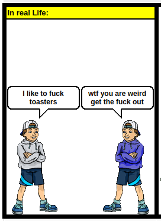
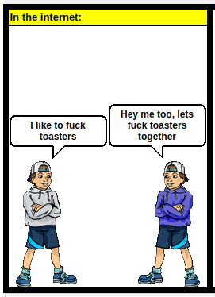

Society has undergone countless changes. We discovered fire, invented the wheel, electricity, cars, mail, paper, chocolate pies, and Adam Sandler's movies. Oh, and we also invented the internet. But the internet is different from the rest. It allows us to do incredible things! Talk to people from another world in an instant, watch videos on how to do stuff, and access knowledge about everything! But wait... when was the last time you used the internet for something truly useful? Too bad. Why does this happen? In this post, we’ll ramble and discuss why the internet has become a space whose sole purpose seems to be liquefying your brain, the consequences of this, and, of course, how to escape it.
So, if you’ve ever done a school project, you probably know how the internet was created. World War II, ARPANET, real-time communication, blah blah blah. The ironic part is realizing that ARPANET was a weapon of war. So, remember: every time you use the internet, you’re wielding a weapon.

Now here’s a truly interesting topic. When did the internet stop being a place for sharing knowledge and turn into one dominated by pornography, biased content, and propaganda? My theory is that it started with MySpace, back in 2004. Up until then, sharing your opinion online was pretty tough (not impossible), and the internet was full of mini-blogs, music sites, and small-scale stuff. MySpace changed the game. Suddenly, anyone could create a profile and share whatever crap they wanted—interests, tastes, and so on. Innocent, right? Wrong.
The thing is, the internet, like any business, was a bit unsustainable. Its military purpose was no longer as critical (the military has its own communication lines now), so what was the answer to fund its exponential growth? Pornography.

Pornography has always been wildly popular and hugely profitable, and the internet only made it better (or worse): those who once slinked to the back of a video rental store could now get their daily dose of nudity from the comfort of home! How spectacular.
Alongside porn came the arrival of fetish communities (scat, BDSM, and the like), and the internet is the perfect breeding ground for them. Why? The toaster fetish example explains it well.
Imagine, dear reader, that you have an uncontrollable urge to have sex with toasters. Naturally, you’re tired of doing it alone with your toaster. So, you decide to find someone who shares your kink:
Turns out, finding people with the same fetishes as you is tough, and if you ask the wrong person, your reputation tanks. Before the internet, anyone with such unique desires would likely suppress them and keep them locked away for life. You’d probably live happily, with a loving family, and die content.
But oops, the internet exists. So, what happens if you ask online?
Holy crap! You’ve discovered a massive community of toaster-lovers! You must be the happiest person alive, right? Now that you’ve got a group backing you up, you show this side of yourself to your family (and face the predictable rejection) and spend the rest of your life at meetups and parties where you all bang toasters. In the end, you die of an overdose at some random party at 29. What a life, huh? At least you enjoyed it... right?
That’s the biggest problem with the internet: too much acceptance and too little judgment (for things that genuinely deserve it). It’s okay to have quirky tastes, but some things are concerning: screwing toasters isn’t healthy—it’s the result of a seriously messed-up disorder. But since the internet lets you speak facelessly and anonymously, the fear of judgment for sharing and glorifying these disorders as if they’re normal is almost nonexistent. While this has helped foster communities that truly deserve acceptance, it’s worth asking: Is it really worth it?
Now, a topic that’s tough to write about because I like anime, but truths must be told, so here we go.
Why is anime so popular? Simple: it gives people something to dream about. I’m not saying everyone dreams of being Naruto or Sasuke, but there’s something deeper. Let’s use another analogy.
Patrick is a 16-year-old high school kid. A classic nerd—academically excellent, never gets in trouble. His parents are proud, his teachers think he’s got a bright future. But who doesn’t like that? The troublemakers. To them, the mere thought of someone being better than them (yes, better) is unbearable. So, Patrick faces brutal bullying: torn homework, spitballs, physical assaults, and standard humiliation. At lunch, the popular girl (who’s only popular because she started kissing random boys early) approaches him and asks if he wants to hang out later. Could this be Patrick’s chance to finally become popular? Nope, definitely not. When he shows up, he gets beaten up. Okay, it happens. He gets home, tells his mom the bruises are from a bike accident (she doesn’t bother to check and hasn’t noticed he “falls” every week), and heads to his room.
He turns on his favorite anime, and as he watches the fights, he imagines: “What if I were that strong? Things would be different. I could beat those guys up, and everyone would want to be my friend.”

Though this story is made up and veered off track, the reason anime is popular is right there, even if it’s hard to admit: the thought that you *could* be that strong is comforting. It’s the same reason romance anime and movies are popular: the dream of a perfect romance, of being strong, mysterious, or better is irresistible to think about.
Obviously, this doesn’t apply to everyone. Some watch anime because reality disappoints them daily. Others just watch to pass the time. But that’s why some adopt a character’s personality: it just feels too good.
OnlyFans is another clear example that the average human will always put money over dignity (that is, if you think baring it all online is remotely shameful).
Sex work has always existed, and I don’t have much to say about it. What I really want to highlight is that, amazingly, platforms like OnlyFans give you more of a sense that you’re in an emotional relationship with the woman behind the screen than actually sleeping with her would. Why? While sex is intimate, a sex worker makes it clear it’s just business. No one feels anything for anyone, and even if you do, lol, she’s heard it so many times it doesn’t even register.

Now, for the lonely guy donating 200 or 300 bucks a month to these women, getting thank-you audios calling him “darling” and personalized videos, it really feels like an emotional connection. And while most are smart enough not to fall for it, sometimes loneliness speaks louder.
Sometimes, when you’re really depressed, it feels like the only way out. The internet has the unfortunate power to amplify any suicidal urge. But why?
Humans were born social creatures, but the internet is showing us that too much socializing can hurt. We see perfect people, perfect bodies, perfect routines, perfect couples, perfect kids, and we compare. *Why can’t my body be like that? Why can’t my life be like that?* Add external factors—family issues, gender dysphoria, other sad stuff I’ll leave to your imagination—and boom, you’ve got a ticking bomb.
As I’ve said, this isn’t universal: some, like me, find comfort and acceptance online, and that’s one of the good things the internet offers. If social media suffocates you, take a break, enjoy life, and know nothing’s perfect in this world. Those who seem perfect are just hiding their flaws.
And to all readers: if you have a friend you know is struggling, have you checked on them? If not, leave this post and go talk to them. Showing you care is the best thing you can do.

For those who don’t want to read it all, here’s the summary: No, at least not for the internet.
The internet is indispensable, and quitting it entirely is impossible. But you can limit it: don’t have accounts on every social platform, stick to trusted groups, don’t let the feds watch you, skip the latest gadgets, focus on what works.
The internet is a scary place, dear reader, but you decide whether it controls you or not.